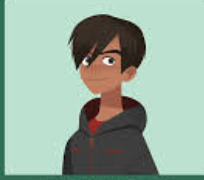
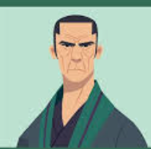

Argentina, raised at the V.I.L.E.
Academy on a remote island, and later turned
against the organization to stop their crimes.

on her missions and acts as her confidant

who joins Carmen's team alongside her brothe
the team's getaway driver and gear specialist

origami master who initially trained Carmen
but later becomes her loyal mentor and ally.
tracks Carmen to uncover the truth about V.I.L.E

chases Carmen before slowly realizing she is
fighting the real bad guys
investigator who works alongside Chase
and eventually partners with Carmen to translate
historical clues